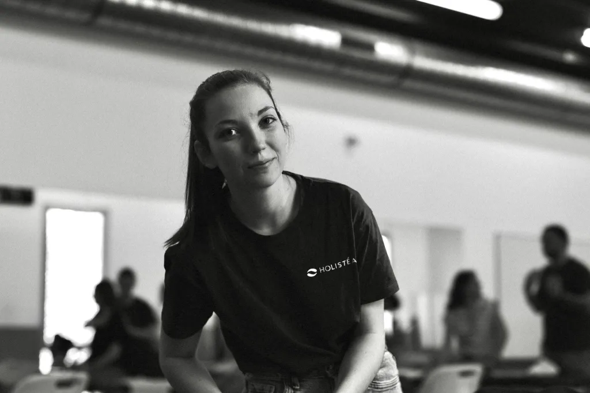
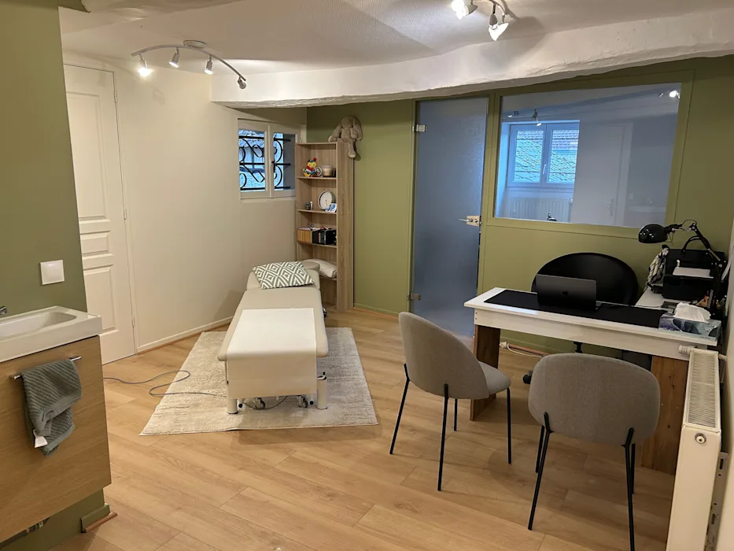

Retrouvez votre équilibre en douceur.
Une ostéopathie attentive et sur-mesure pour apaiser vos douleurs, libérer les tensions et accompagner votre corps vers un mieux-être durable.

Une ostéopathie qui prend le temps de vous écouter
Chaque corps raconte une histoire. Avant tout geste, je prends le temps de comprendre la vôtre : vos antécédents, votre rythme de vie, vos tensions.
Ma pratique repose sur des techniques manuelles douces et adaptées à chacun — crânienne, viscérale, structurelle et tissulaire. L'objectif n'est jamais de traiter un symptôme isolé, mais de redonner à votre organisme sa capacité naturelle à s'équilibrer et à se réparer.
- Bilan personnaliséUn temps d'échange pour cibler l'origine réelle de vos douleurs.
- Gestes doux et précisDes techniques adaptées à votre âge et à votre sensibilité.
- Conseils durablesPostures, respiration et hygiène de vie pour prolonger les bienfaits.
Une ostéopathie pour toute la famille
Du nourrisson au sportif de haut niveau, j'adapte ma pratique à chaque profil et à chaque besoin.
Adultes
Douleurs de dos, tensions, stress, troubles digestifs ou du sommeil.
Enfants
Croissance, posture, sommeil et accompagnement scolaire en douceur.
Sportifs
Préparation, récupération, prévention des blessures et gain de mobilité.
Femmes enceintes & nourrissons
Grossesse, post-partum et tout-petits accompagnés avec la plus grande douceur.
L'ostéopathie peut vous soulager
De nombreux maux du quotidien trouvent une réponse dans un accompagnement ostéopathique régulier. Voici les motifs de consultation les plus fréquents au cabinet.
En cas de doute, n'hésitez pas à me contacter : je vous orienterai toujours vers le professionnel le plus adapté à votre situation.
Une question ? Contactez-moi- Lombalgies & sciatiques
- Cervicalgies
- Maux de tête & migraines
- Troubles digestifs
- Stress & anxiété
- Troubles du sommeil
- Tensions articulaires
- Suites de traumatismes
- Troubles posturaux
- Fatigue chronique
Comment se déroule une consultation
Une heure pour vous, dans un cadre calme et chaleureux.
L'échange
Nous prenons le temps de discuter de votre motif de consultation, de vos antécédents et de votre mode de vie. C'est le point de départ d'un soin réellement personnalisé.
Le bilan & le soin
Par des tests manuels précis, j'identifie les zones de tension. Le traitement, doux et progressif, vise à restaurer la mobilité et l'équilibre de votre corps.
Les conseils
En fin de séance, je vous transmets des conseils personnalisés — étirements, posture, respiration — pour prolonger les bienfaits du soin au quotidien.
Un cocon pensé pour votre bien-être
Au cœur de Trie-Château, le cabinet vous accueille dans un espace lumineux, apaisant et chaleureux — un lieu propice au relâchement, dès le seuil franchi.
Une salle d'attente conviviale, un cabinet de soin doux et feutré : tout est pensé pour que vous vous sentiez en confiance, le temps d'une parenthèse rien que pour vous.

Ils nous recommandent sur Google
Les retours authentiques des patients du cabinet, directement depuis Google.
Offrez-vous une parenthèse de bien-être
Réservez votre consultation en quelques clics sur Doctolib, à l'horaire qui vous convient. Votre corps vous dira merci.